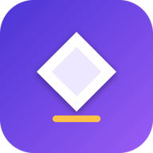

Notebook Studio ProTérminos de uso
Estos términos aplican a la app Notebook Studio Pro para Android y a su suscripción Pro, ofrecidas por Cardón («nosotros»). Al instalar o usar la app aceptas estos términos.
1. Qué ofrecemos
Una app para escribir y ejecutar Python en el teléfono, con un curso por niveles. La versión gratuita incluye el notebook y los niveles 1 a 3. La suscripción Pro agrega los niveles 4 a 6, el asistente con inteligencia artificial y la publicación en GitHub.
2. Suscripción y precios
- Pro se ofrece en plan mensual (MX$79 o US$4.99) y anual (MX$699 o US$39.99). En México se cobra en pesos y fuera de México en dólares. Los precios incluyen impuestos cuando aplican.
- La suscripción se renueva automáticamente al final de cada periodo hasta que la canceles.
- Si cambiamos el precio, te avisaremos antes de tu siguiente renovación; el nuevo precio aplica desde esa renovación.
- En la versión de Google Play, el cobro, la renovación y la cancelación los maneja Google Play con su propia política de reembolsos; los precios pueden variar por país. En la versión que se descarga de nuestra página, los pagos los procesa Stripe. En ningún caso recibimos ni guardamos los datos de tu tarjeta.
3. Prueba gratis
La primera suscripción incluye 7 días sin costo. Si no cancelas antes de que terminen, se cobra el plan elegido. La prueba es una por persona y por tarjeta; si se detecta una tarjeta que ya usó la prueba, el cobro empieza de inmediato.
4. Cancelación y reembolsos
Puedes cancelar en cualquier momento desde la app, en «Más → Gestionar suscripción» (en la versión de Google Play te lleva a Play Store → Pagos y suscripciones). Conservas Pro hasta el final del periodo pagado y no se vuelve a cobrar. No hacemos reembolsos por periodos parciales, salvo cuando la ley lo exija o cuando un cobro haya sido un error nuestro. Para pedir una revisión, escríbenos por el canal de soporte dentro de los 30 días siguientes al cobro.
5. Código de recuperación
No usamos correo ni contraseña. Tu suscripción va ligada al código de recuperación que muestra la app. Quien tenga ese código puede usar tu suscripción, así que no lo compartas. Si lo pierdes y desinstalas la app, no podemos recuperar tu suscripción por otra vía. En ese caso escríbenos a soporte con el número de tu recibo de Stripe y la cancelamos por ti.
6. Asistente con IA
El asistente usa modelos de inteligencia artificial y puede equivocarse. Revisa lo que te propone antes de usarlo en algo importante. Tiene un límite de 40 preguntas al día por suscripción para mantener el servicio estable. No debe usarse para generar contenido ilegal ni para dañar a otras personas.
7. Uso aceptable
No está permitido revender la suscripción, compartir el código de recuperación de forma masiva, intentar usar el servidor fuera de la app ni interferir con su funcionamiento. Podemos suspender una suscripción que incumpla estos puntos.
8. Tu contenido
Tus notebooks son tuyos. Se guardan en tu teléfono y, si tú lo decides, en tu propia cuenta de GitHub.
9. Garantía y responsabilidad
La app se ofrece tal como está. Hacemos lo posible por que funcione sin interrupciones, pero no garantizamos que esté libre de errores. En la medida que permita la ley, nuestra responsabilidad total se limita a lo que pagaste en los últimos 12 meses.
10. Cambios
Podemos actualizar estos términos. Si el cambio es importante, lo avisaremos en la app o en esta página antes de que aplique.
11. Ley aplicable
Estos términos se rigen por las leyes de los Estados Unidos Mexicanos. Si eres consumidor en México, conservas los derechos que te da la Ley Federal de Protección al Consumidor y puedes acudir a la PROFECO.